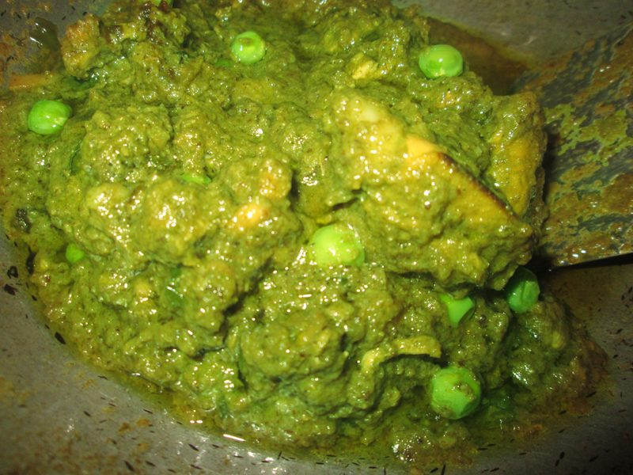

Heirloom Herb Terroir. Botanical Culinary Mastery.
Elevating the humble coriander plant into an epicurean art form. Experience multidimensional flavor arcs spanning citrus-forward micro-leaves, cold-pressed green oils, toasted floral seeds, and wood-smoked root reductions.

Heirloom Morchella mushrooms glazed in cold-pressed green coriander oil and crushed toasted seeds.
The Fourfold Anatomy of Coriandrum Sativum
Unlike conventional dining that treats coriander solely as an afterthought garnish, our kitchen celebrates every anatomical manifestation of the plant across distinct developmental lifecycles.
Taproot & Rhizosphere
Earthy, woodsy, and deeply savory. We slow-braise taproots in rich vegetable dashi to extract caramelized umami and complex mineral undertones that anchor hearty main courses.
Young Leaf & Micro-Greens
Pungent, citrusy, and vibrant. Harvested within 18 days of germination, micro-leaves offer concentrated chlorophyll and refreshing aldehyde brightness that cleanse the palate.
Flowering Umbels
Delicate, floral, and honeyed. White and pale pink umbel blossoms provide sweet nectar accents and crisp peppery snaps for chilled soups and delicate crudo preparations.
Aromatic Whole Seeds
Warm, spicy, and citrus-resinous. Rich in volatile linalool and pinene essential oils, cracked seeds provide textural crunch and aromatic warmth to hearth-fired dishes.
The Volatile Terpene & Flavour Chemistry Matrix
The sensory divergence between coriander leaves and seeds is governed by dramatic molecular variations in organic hydrocarbon chemistry. We map each aromatic fraction to specific culinary techniques.
| Plant Component | Primary Volatile Compound | Sensory Descriptors | Boiling / Extraction Threshold | Optimal Kitchen Application |
|---|---|---|---|---|
| Mature Dried Seeds | d-Linalool (65 – 75%) | Sweet floral, woody citrus, warm lavender | 198°C (Thermal tempering) | Hot oil blooming, hearth roasting, dry rubs |
| Fresh Tender Leaves | (E)-2-Decenal (25 – 35%) | Pungent green, sharp citrus, peppery grass | 45°C (Degrades in high heat) | Raw finishing, cold oil mists, flash emulsion |
| Flowering Umbels | α-Pinene & Geraniol (15 – 20%) | Pine resin, sweet rose, honey blossom | 80°C (Infusion temperature) | Chilled consommés, herbal shrubs, botanical teas |
| Braised Taproots | Coriandrol & Terpinene | Earthy musk, roasted parsnip, savory umami | 100°C (Sustained reduction) | Slow-simmered broths, glazed reductions, purées |
Thermal Terpene Activation
Gentle dry roasting of mature seeds at 135°C causes lipid cell walls to rupture, liberating trapped monoterpenes. As pyrazines form through Maillard reactions, the raw seed transforms into a sweet, nutty, warm aromatic powerhouse.
Cold-Pressed Chlorophyll Preservation
Fresh cilantro leaves are sensitive to oxidation and heat. By flash-blanching leaves at 90°C for four seconds followed by an ice shock, we deactivate polyphenol oxidases, locking in brilliant emerald hues and crisp aldehyde top-notes.
Ancient Wisdom Meets Modern Gastronomy
Our kitchen brigade fuses heritage Indian tempering techniques, French saucing precision, and modern cold-press extraction to unlock unprecedented botanical depth.
Cast-Iron Tadka Blooming
Whole seeds are dropped into artisanal cold-pressed mustard and sesame oils heated to 180°C for precisely twelve seconds, infusing the cooking medium with explosive floral aromatics before pouring over roasted roots.
Ultrasonic Lipophilic Maceration
Using non-thermal acoustic sound waves at 40 kHz, we disrupt coriander plant cell walls without heat, producing translucent emerald green oils with astonishing aromatic clarity and prolonged shelf freshness.
Cold-Pressed Fermented Shrubs
Fresh coriander leaves and crushed seeds are naturally fermented with organic raw honey and live fruit vinegars, generating sparkling, probiotic botanical tonics that pair harmoniously with our savory tasting courses.
Iconic Botanical Creations
Explore three signature dishes that have earned CorianderFare widespread acclaim among international culinary connoisseurs and dining critics.
The Three-Terroir Seed Crisp
A delicate wafer composed of heirloom Indian, Moroccan, and Crimean coriander seeds, bonded with golden flax mucilage and finished with crystallized Maldon sea salt.

Poached Winter Squash & Honey Umbel
Kabocha squash slowly poached in smoked coriander seed broth, topped with whipped chevre, caramelized pepitas, and freshly clipped coriander flower crowns.
Mortar-Ground Herb Coulis
Coarsely pounded cilantro leaves, toasted coriander seeds, green chiles, and cold-pressed olive oil, hand-ground in granite mortars to preserve cellular texture.
The 181 Mercer Street Experience
Housed within an iconic 19th-century cast-iron building in SoHo, our dining room is designed as an intimate botanical sanctuary. Hand-plastered lime walls, reclaimed walnut dining tables, and soft amber illumination create an atmosphere of serene contemplation.
With only thirty-four seats available per seating, guests enjoy personal interactions with our sommeliers and culinary artisans, witnessing the delicate assembly of courses from our quiet open-hearth kitchen.
Reflections from Discerning Palates
Read how leading food critics, culinary historians, and travel scholars describe their sensory journey at CorianderFare.
"CorianderFare has achieved what few single-focus restaurants ever attempt: a revelation in flavor taxonomy. The progression from fresh green leaf to deeply roasted seed broth is a masterclass in culinary intellect."
"Dining here feels like walking through a living herb garden at sunrise. The non-alcoholic botanical pairings, particularly the cold-pressed seed shrubs, redefine what modern pairing can be."
"I walked in as someone historically skeptical of cilantro, but the kitchen's mastery of seed linalool and roasted root reductions completely converted me. An unforgettable culinary evening."
Frequently Asked Questions on Botanical Dining
Practical details regarding table reservations, dietary modifications, sensory preferences, and our biodynamic farming sourcing.